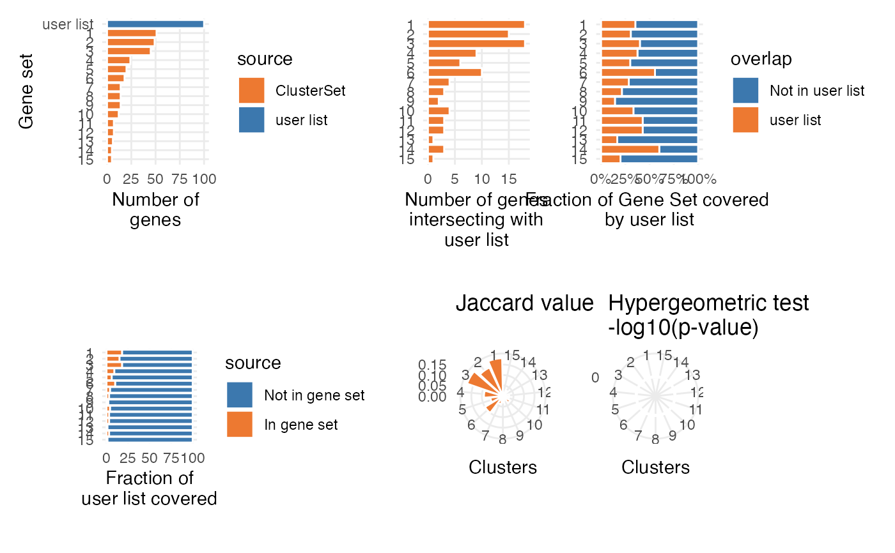

R/compare_gene_sets.R
cmp_to_a_list.RdMap a user list to a ClusterSet and display various metrics related to overlap with internaly stored clusters
A ClusterSet object
A set of elements to be compared to clusters stored in the object.
A name for the user list.
A background(e.g. all the gene of the genome).
A set of colors.
The analyses to be performed.
Whether a list of plot should be returned (default to a patchwork).
A patchwork representing the various metrics (or a list of diagram).
set.seed(124)
load_example_dataset("7871581/files/pbmc3k_medium_clusters")
user_list <- sample(row_names(pbmc3k_medium_clusters), 100)
cmp_to_a_list(pbmc3k_medium_clusters, user_list, background=user_list)
#> Warning: The dot-dot notation (`..count..`) was deprecated in ggplot2 3.4.0.
#> ℹ Please use `after_stat(count)` instead.
#> ℹ The deprecated feature was likely used in the scigenex package.
#> Please report the issue to the authors.
